치료와 학술 교류
- 2001년신준식 박사가 정형외과·신경외과 전문가들과 허리병과 만성 요통 치료를 주제로 대담했습니다.
- 2015년미국 침술의학회(AAMA) 컨퍼런스에서 신경근회복술을 소개했습니다.
- 2018년제1회 자생국제학술대회에서 추나요법 연구성과와 해외 수기치료·의료체계 등을 논의했습니다.
- 2019년미국 국방부 건강국(DHA) 주최 원격 보수교육에서 의료전문가 600여 명을 대상으로 한방 비수술 치료법을 강의했습니다.
- 2021년미국 평생의학교육인증원(ACCME) 정식 인증 보수교육 제공기관 자격 획득이 소개되었습니다.
- 2022년목 통증 치료에서 추나요법의 유효성과 경제성에 관한 연구가 소개되었습니다.
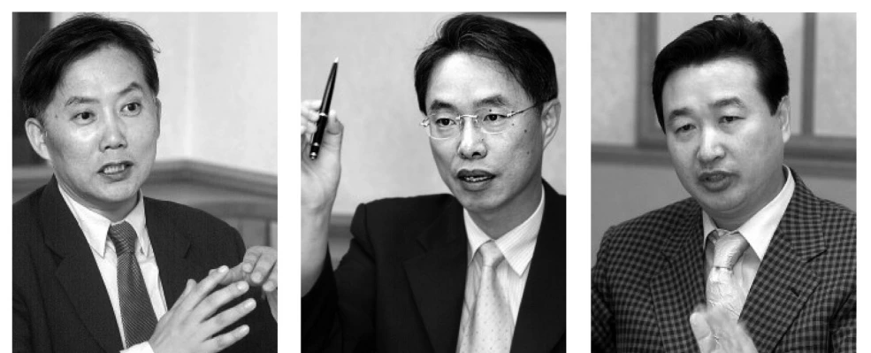
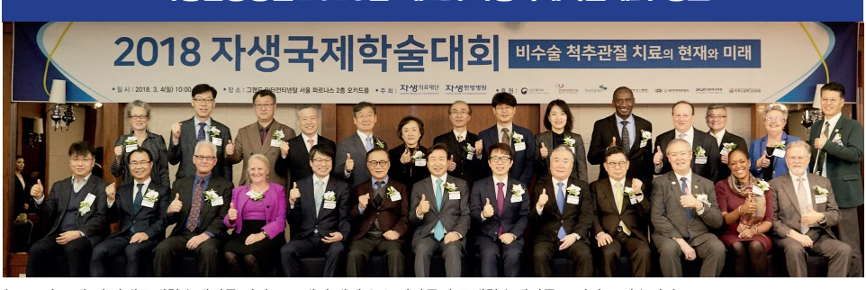
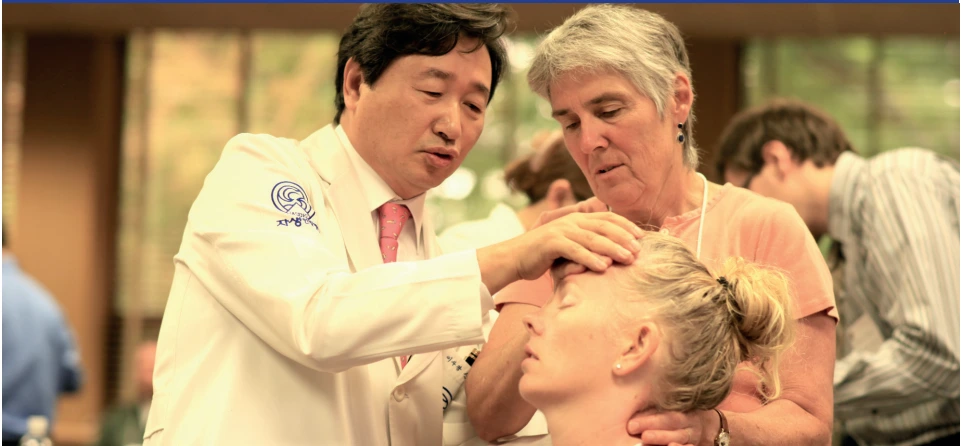
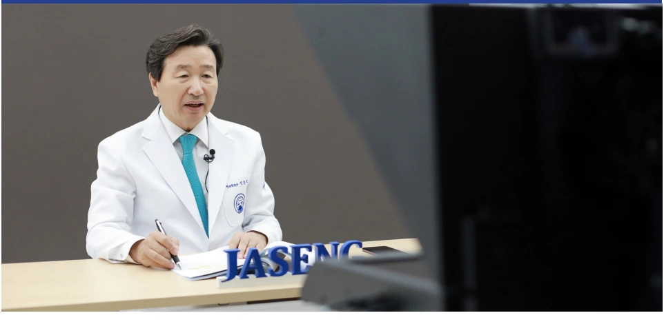
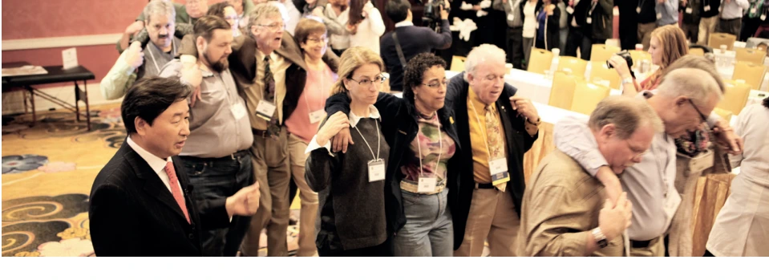
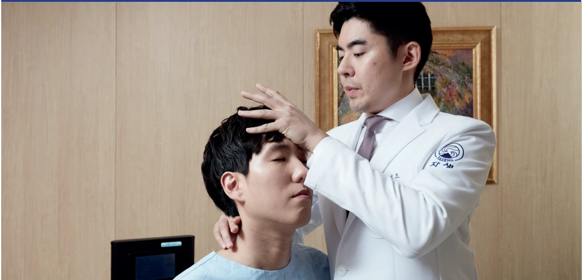
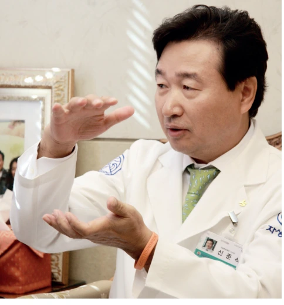
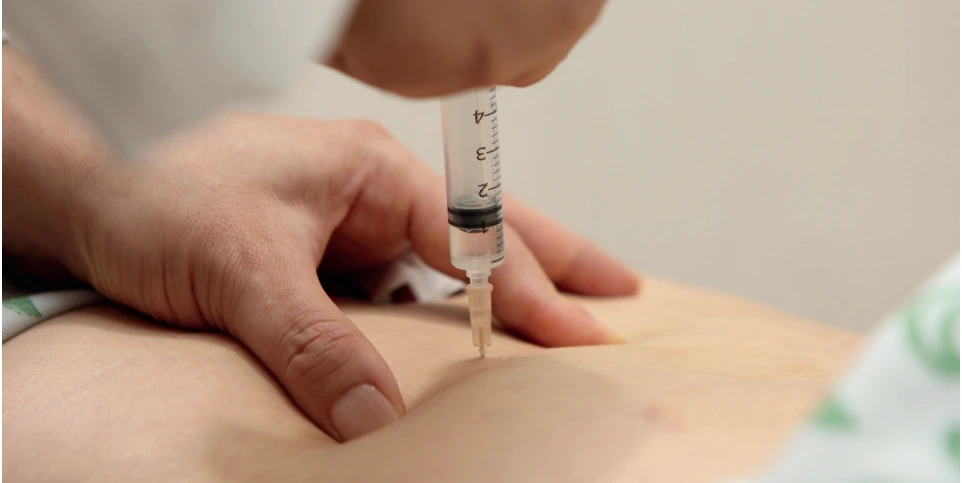
역사와 나눔
신홍균·신광렬 선생의 독립운동을 입증하기 위해 월남유서와 국내외 기록을 조사한 과정이 조명되었습니다.
2019년에는 신준식 박사가 독립유공자유족회에 장학금 1억원을 기탁했습니다. 독립유공자 후손 대학생 10명의 학업과 유가족 3명의 특별생계지원에 사용하기 위한 나눔입니다.
2022년에는 한의과대학 및 한의학전문대학원생에게 장학금과 장학증서를 전달한 활동이 소개되었습니다.
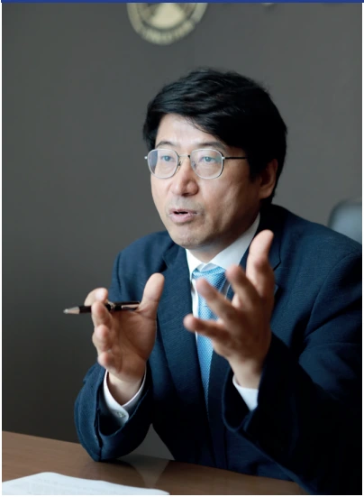
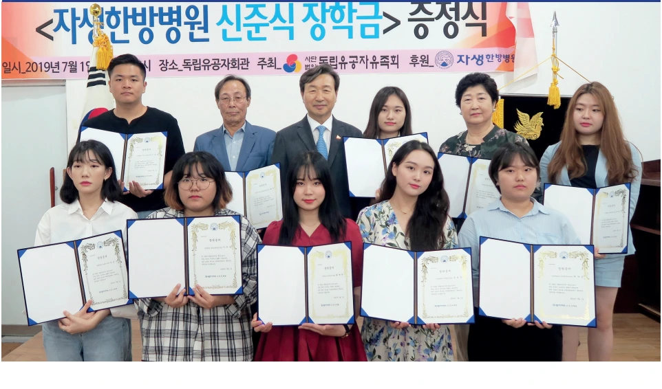
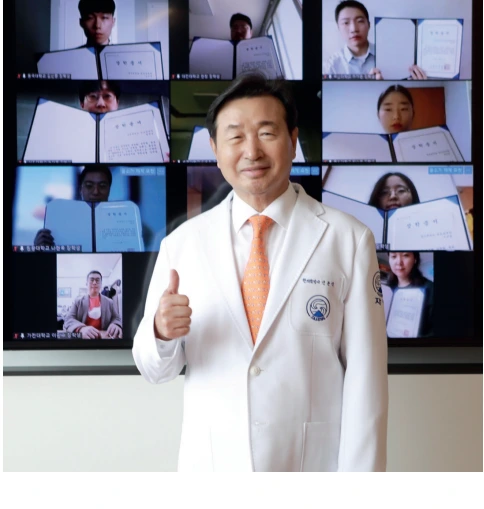